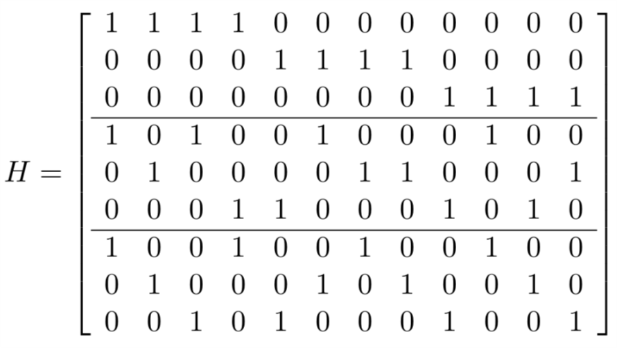
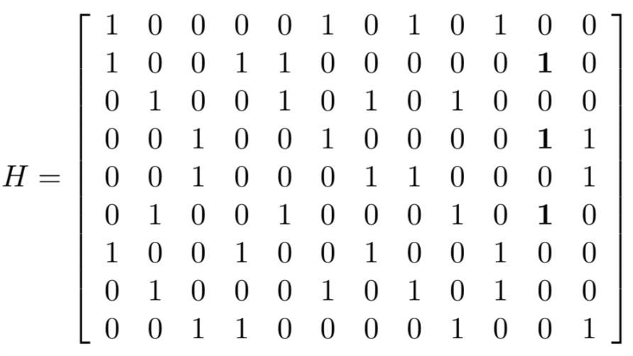
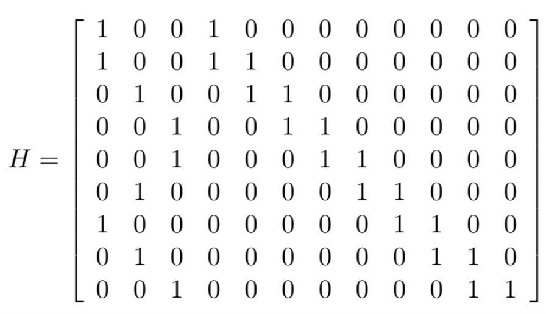

LDPC简介
1963年，MIT的Gallager发明LDPC(Low-density-Parity-Check)码。然而，限于当时计算能力，直到30年后（1996），Mackay 和Neal等人对LDPC码进行了再发现和深入研究，LDPC码才逐渐进入人们视野。目前LDPC码在WIFI，WiMax等各种通信协议中都有广泛的使用。2017年3GPP RAN87会议上，LDPC更被3GPP选为5G数据信道编码方案，标志着LDPC在无线蜂窝网络中占得一席。
本文是关于LDPC码的一系列博文中的第一篇，简单介绍LDPC码的发展历史和基本原理。我将在另外的博文中阐述如何构造LDPC码，译码LDPC码以及LDPC码的其他重要特性。
1 历史
LDPC ( Low-density Parity-check，低密度奇偶校验）码是由 Gallager 在1963 年提出的一类具有稀疏校验矩阵的线性分组码 (linear block codes)，然而在接下来的 30 年来由于计算能力的不足，它一直被人们忽视。1996年，D MacKay、M Neal 等人对它重新进行了研究，发现 LDPC 码具有逼近香农限的优异性能。并且具有译码复杂度低、可并行译码以及译码错误的可检测性等特点，从而成为了信道编码理论新的研究热点。
Mckay ，Luby 提出的非正则 LDPC 码将 LDPC 码的概念推广。非正则LDPC码 的性能不仅优于正则 LDPC 码，甚至还优于 Turbo 码的性能，是目前己知的最接近香农限的码。
Richardson 和 Urbank 也为 LDPC 码的发展做出了巨大的贡献。首先，他们提出了一种新的编码算法，在很大程度上减轻了随机构造的 LDPC 码在编码上的巨大运算量需求和存储量需求。其次，他们发明了密度演进理论，能够有效的分析出一大类 LDPC 译码算法的译码门限。仿真结果表明，这是一个紧致的译码门限。最后，密度演进理论还可以用于指导非正则 LDPC码 的设计，以获得尽可能优秀的性能。现在Richardson就职于高通，显然是LDPC码进入3GPP eMBB信道的幕后推手之一。Richardson创立的 Flarion公司推出的基于 ASIC 的 Vector-LDPC 解决方案使用了约 260 万门，最高可以支持 50000的码长，0.9 的码率，最大迭代次数为 10，译码器可以达到 10Gbps 的吞吐量，其性能己经非常接近香农限，可以满足目前大多数通信业务的需求。
2 和Turbo的对比
提及LDPC码就不得不提另外一种趋近香农限的码：Turbo码。1993年Berrou等人发明了Turbo码。很快，Turbo的思想在通信系统的各个领域都有深入的应用，最典型的应用便是进入了3G和4G蜂窝网络。关于Turbo的简单介绍，可以参阅我的另外一篇博文。
与Turbo码相比，LDPC码的主要优势有：
- LDPC码的译码算法，是一种基于稀疏矩阵的并行迭代译码算法，运算量要低于Turbo码译码算法，并且由于结构并行的特点，在硬件实现上比较容易。因此在大容量通信应用中，LDPC码更具有优势。在深度学习算法横行的今天，运算资源根本不是问题。另外，值得注意的是，基于消息传递算法的LDPC译码算法与机器学习中置信网络算法在本质上毫无二致。目前5G标准要求最高20Gbps的吞吐，对LDPC码来说毫无难度，但是对Turbo码来说却充满挑战。
- LDPC码的码率可以任意构造，有更大的灵活性。而Turbo码只能通过打孔来达到高码率，这样打孔图案的选择就需要十分慎重的考虑，否则会造成性能上较大的损失。这也是在5G的eMBB选码过程中，Turbo被诟病的一个方面。
- LDPC码具有更低的错误平层，可以应用于有线通信、深空通信以及磁盘存储工业等对误码率要求更加苛刻的场合。而Turbo码的错误平层远高于 LDPC码，并且目前没有针对Turbo码错误平层的有效应对方法。一种普遍的做法是与其他码级联，形成级联码，但是级联码的实用大大的提高了复杂度。
- 基于Raptor-like的LDPC码在速率匹配和Harq传输方面有着天然的优势，不需要像Turbo码那样基于一个最低码率（在4G中是1/3，高码率必须通过1/3码率打孔实现。）
与Turbo相比，LDPC的劣势有：
- 硬件资源需求比较大。全并行的译码结构对计算单元和存储单元的需求都很大。针对这一问题，已经有多重高效的译码算法提出，他们或者基于行并行，或者基于块并行。
- 编码比较复杂，更好的编码算法还有待研究。同时，由于需要在码长比较长的情况才能充分体现性能上的优势，所以编码时延也比较大。针对这一问题，提出了 准循环的LDPC码（QC-LDPC码），其编码过程仅仅需要使用寄存器移位即可实现，并且在实现上可以全并行。
- 相对于Turbo，工业界支持不够。这一问题随着LDPC优良特性越来越被认可而不再是个问题。采用LDPC编码的标准越来越多。5G就是一个典型的例子。有人说5G eMBB信道采用LDPC码标志着LDPC码的巅峰和Turbo码的退出。
3 基于校验方程的纠错和检错
不同于其他线性分组码，LPDC码编码端的码字生成和译码端的译码检错都与LDPC的校验矩阵(Parity Check Matrix, PCM)密切相关。
前向纠错码的核心思想是通过对信息比特引入额外的校验比特生成编码码字。生成的这些编码码字我们希望距离越大越好，这样即便在信道传输过程中有干扰，接收机（更具体的说，译码器）也能够恢复信息比特。最简单的校验比特生成方案是单比特校验码（Single Parity Check Code, SPC）. SPC通过引入一个额外的二进制校验比特，这个二进制校验比特的奇偶由信息比特决定。在每一个校验比特码字中，额外比特的引入都保证生成的码字有偶数个1（我们成为偶校验，如果保证生成的码字中有奇数个1，则为奇校验）.
比如字母“S”的7-bit ASCII 为“1010011”，我们通过校验方程生成第八个比特作为其校验比特，由于其已经有偶数个1，所以校验比特为0，所以“S”的码字为“10100110”。
更正式的表达为，对于7-bit的偶校验码我们定义一个码字：
\begin{equation} \label{eq:1} \mathbf{C} = [c_{1}\quad c_{2}\quad c_{3}\quad c_{4}\quad c_{5}\quad c_{6}\quad c_{7}\quad c_{8}\quad ] \end{equation}其中\(c_{i}\)是二进制数。每一个码字\(C\)满足：
\begin{equation} \label{eq:2} c_{1}\oplus c_{2} \oplus c_{3}\oplus c_{4} \oplus c_{5} \oplus c_{6} \oplus c_{7}\oplus c_{8} \oplus = 0 \end{equation}上式叫做偶校验方程。\(\oplus\)是模2加。这个方程是很弱的一个方程，智能检测一个比特的反转，不能告诉我们哪一个比特发生了反转，也不能告知我们是否有多个比特发生了反转。为了检验多个比特的反转，我们必须使用更强大的冗余添加方案。
比如一个长为6的码字\(C\)：
\begin{equation} \label{eq:3} \mathbf{C} = [c_{1}\quad c_{2}\quad c_{3}\quad c_{4}\quad c_{5}\quad c_{6} ] \end{equation}满足以下三个校验方程：
\begin{eqnarray*} &&c_{1} \oplus c_{2} \oplus c_{4} = 0 \\ &&c_{2} \oplus c_{3} \oplus c_{5} = 0 \\ &&c_{1} \oplus c_{2} \oplus c_{3}\oplus c_{6} = 0 \end{eqnarray*}上式的校验过程通常我们会写成矩阵的形式：
\begin{equation} \label{eq:4} \begin{bmatrix} 1 & 1 & 0 & 1 & 0 & 0 \\ 0 & 1 & 1 & 0 & 1 & 0 \\ 1 & 1 & 1 & 0 & 0 & 1 \end{bmatrix} \begin{bmatrix} c_{1} \\ c_{2} \\ c_{3} \\ c_{4} \\ c_{5} \\ c_{6} \end{bmatrix} = \begin{bmatrix} 0 \\ 0 \\ 0 \end{bmatrix} \end{equation}我们定义：
\begin{equation} \label{eq:5} H = \begin{bmatrix} 1 & 1 & 0 & 1 & 0 & 0 \\ 0 & 1 & 1 & 0 & 1 & 0 \\ 1 & 1 & 1 & 0 & 0 & 1 \end{bmatrix} \end{equation}为校验矩阵，\(H\)的每一行对应一个校验方程，每一列生成码字的一个比特。一个有\(m\)个校验比特，长为\(n\)的二进制编码方案其校验矩阵是\(m\times n\)的二进制矩阵。如果\(\mathbf{y} = [c_{1} \quad c_{2}\quad c_{3} \quad c_{4} \quad c_{5} \quad c_{6}]\)是一个合法码字，那么：
\begin{equation} \label{eq:6} H\mathbf{y}^{T} = 0 \end{equation}4 编码过程
为了区分编码比特和校验比特，我们重新把上面例子中的约束关系写下来：
\begin{eqnarray*} c_{4}&=& c_{1}\oplus c_{2} \\ c_{5}&=& c_{2} \oplus c_{3} \\ c_{6}&=& c_{1}\oplus c_{2} \oplus \end{eqnarray*}码字中的\(c_{1},c_{2},c_{3}\)是消息比特，\(c_{4},c_{5},c_{6}\)是校验比特，校验比特是有消息比特按照一定的约束关系生成的。例如三个消息比特为\(1,1,0\)，那么校验比特分别是：
\begin{equation} \label{eq:7} c_{4} = 1\oplus 1 = 0 \\ c_{5} = 1\oplus 0 = 1 \\ c_{6} = 1\oplus 1\oplus 0 = 0 \end{equation}所以\(1,1,0\)对应的码字是\(\mathbf{c}=[1,1,0,0,1,0]\)。这个编码过程可以写成：
\begin{equation} \label{eq:8} [c_{1}\quad c_{2}\quad c_{3} \quad c_{4} \quad c_{5} \quad c_{6}] =[c_{1} \quad c_{2} \quad c_{3}] \underbrace{G}{ \begin{bmatrix} 1 & 0 & 0 & 1 & 0 & 1\\ 0 & 1 & 0 & 1 & 1 & 1\\ 0 & 0 & 1 & 0 & 1 & 1 \end{bmatrix}} \end{equation}其中右边的矩阵叫做生成矩阵，消息比特通常写作\(\mathbf{u} = [u_{1},u_{2},\ldots ,u_{k}]\)，其中\(\mathbf{u}\)包含\(k\)个消息比特。上述编码过程可以写成：
\begin{equation} \label{eq:9} \mathbf{c} = \mathbf{u}G \end{equation}对于一个二进制编码方案：消息比特个数为\(k\)，码字长度为\(n\)，则其生成矩阵\(G\)的大小为\(k\times n\)，码率为\(k/n\)。一个有\(k\)个信息比特的编码方案包含\(2^{k}\)个码字。这些码字是\(2^{n}\)个二进制矢量的子集。我们的目标设计一套编码方案使得这\(2^{k}\)个码字的距离尽可能的远。
上个例子中一共有\(2^{3}=8\)个信息比特的组合\(c_{1}c_{2}c_{3}= 000,001,\ldots ,111\)，带入式~(\ref{eq:8})生成八个码字：
\begin{eqnarray*} &&[000000] \quad [001011]\quad [010111]\quad [011100]\\ &&[100101]\quad [101110]\quad [110010]\quad [111001] \end{eqnarray*}这个码叫做系统码，因为码字的前\(k\)个比特包含的是信息比特。对于系统码而言生成矩阵包含一个\(k\times k\)的单位矩阵，\(I_{k}\)。这个单位阵占据了生成矩阵的前\(k\)列。一个校验矩阵是\(K\)的线性分组码，可以通过高斯消元把校验矩阵变成生成矩阵。假设校验矩阵为\(H\):
\begin{equation} \label{eq:10} H = [A,I_{n-k}] \end{equation}其中\(A\)是一个\((n-k)\times k\)\)的二进制矩阵,\(I_{n-k}\)是一个\(n-k\)的单位矩阵。生成矩阵为：
\begin{equation} \label{eq:11} G =[I_{k},A^{T}] \end{equation}\(G\)的行空间和\(H\)的行空间是正交的，即：
\begin{equation} \label{eq:12} GH^{T} = 0 \end{equation}原则上讲，一个码字可以用任意数量的校验方程来描述，但是只有其中\(n-k\)个是线性独立的，\(n-k\)是\(H\)的秩。
4.1 LDPC码
LDPC码的校验矩阵只有很少一部分非零元素。校验矩阵的稀疏性保证了较低的译码复杂度和较好的最小距离特性。这两个都随着码长的增加线性增加。除了要求校验矩阵是稀疏的，LDPC码和其他的线性分组码没有本质的区别。事实上，如果某个线性分组码能够用系数矩阵表示，那么其一定可以使用迭代译码算法进行译码。但是，为目前存在的线性分组码找到系数矩阵表示不是一件容易的事情。LDPC码是一种从设计之初就考虑了校验矩阵稀疏性的线性分组码。LDPC码是用校验矩阵表示的，可以用校验矩阵进行编码。当然也可以把校验矩阵转化为生成矩阵用生成矩阵进行编码。
LDPC码和经典的线性分组码的最大区别是他们的译码方式不同。经典的线性分组码通常使用ML进行译码，所以它们的码字长度也都比较短，并且在译码过程中会充分考虑到这些线性分组码的代数特性。LDPC码的校验矩阵可以通过一种叫做Tanner图的技术进行表示，使用这种表示方法LDPC码可以迭代的译码。
一个\((w_{c},w_{r})\)的LDPC码其生成码字的每个编码比特都只包含在特定的\(w_{c}\)个校验方程中，每一个校验方程也只包含\(w_{r}\)个编码比特。这样的LDPC码也叫作regular LDPC码，因为其每一列的1的个数相同，每一行的1的个数相同，当然每一行的1的个数不一定和每一列的1的个数相同。LDPC码的构造方法有很多，最原始的构造方法是Gallager发明的。Gallager构造的是regular LDPC码，其通过把LDPC的校验矩阵划分成多个带进行构造。Gallager LDPC矩阵的列被分成\(M/w_{c}\)行构成的带，一共有\(w_{c}\)个带。第一个带的每一行包含了\(w_{r}\)个连续的1，其他带的1都是这些行的交织。

另一个LDPC的构造方法是MacKay和Neal提出来的。在这个方法中\(H\)是从左到右逐列增加的。每一列的权重都要满足比特的度分布和其他一些约束条件。一个长度为\(12\)的\((4,3)\)规则MacKay-Neal校验矩阵是：

增加第11列的时候，需要被填充的行是\(2,4,5,6,9\)，最终选择了\(2,4,6\)。
另外一种LDPC码叫做repeat-accumulate码，这种码在最后的\(m\)列中有列重为2的阶梯状列分布。这种结构使得RA码为系统码，一个最大的优势是编码简单。一个码长为12码率为\(1/4\)的RA码是：

上图的矩阵前三列对应消息比特。第一个校验比特（\(H\)的第四列）编码过程为\(c_{4}=c_{1}\)，第二个校验比特为\(c_{5}=c_{4}\oplus c_{1}\)，下一个编码比特\(c_{6}=c_{5}\oplus c_{2}\)。依次类推。通过这种方法，校验比特可以快速的通过校验矩阵编码完成。
因为LDPC码通常通过伪随机的方法构造，满足一定条件的LDPC校验矩阵不只一个。在讨论LDPC码的时候我们也不特定讨论一个LDPC码，而是讨论一个满足特定条件的一个集合（成为set或者ensemble）。